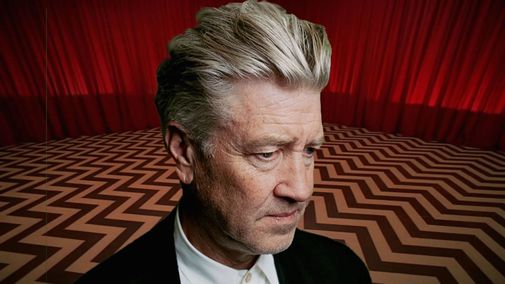

-
Pantheon Directors: David Lynch
by Mitchel Green - January 20, 2025
|
mitchelgreen34@gmail.com

This is the first in a new series in which I attempt to add to Andrew Sarris’s Pantheon of filmmakers from his book “The American Cinema.” Only going through 1968, there are now multiple generations of filmmakers that I believe have great arguments to be entered into the Pantheon — from New Hollywood auteurs that were included, but not given their due, in Sarris’s original book, to artists that emerged (or even born) after the publication of “The American Cinema.” I won’t try to copy Sarris’s writing style with these essays, but I will keep his criteria in mind: “These are directors who have transcended their technical problems with a personal vision of the world. To speak any of their names is to evoke a self-contained world with its own laws and landscapes. They were also fortunate enough to find the proper conditions and collaborators for the full expression of their talent.”
Key Works: “Eraserhead,” “Blue Velvet,” “Twin Peaks,” “Wild at Heart,” “Mulholland Dr.,” “Inland Empire”
David Lynch’s death has left a hole in me in ways that I have not only never experienced with any other artist whose work has connected with me in a meaningful way, but also that I never expected with an artist whose work I have such wildly varying opinions on. But in a way that makes perfect sense as a response to hearing of his passing. It’s not just enough to expect the unexpected with Lynch, with his work you need to throw away any possible preconceptions of what could come out of a Hollywood-adjacent filmmaker.
There’s a world in which the Hollywood apparatus eats David Lynch, one in which, after the success of “The Elephant Man,” he does “Return of the Jedi” or “Dune” is successful, and he continues making mid-to-high budget studio films that little by little chip away at his unique artistic voice. But Lynch was never meant to assimilate into that system. He broke in right at the tail end of the only time it might have been possible for an artist like him to take over Hollywood. Instead, we have a body of work that, while relatively small for the number of years he had worked, is completely his own, a reminder of what independence can bring and take away from an artist.
And yet, “Dune” wasn’t Lynch’s last brush with commercial Hollywood production. There is “The Straight Story,” a film written by his long-time producer that he agreed to direct and was released by Disney, and then there’s Lynch’s (probably) best-known work: “Twin Peaks.” The series, created by Lynch and Mark Frost is debateably the most important television drama ever made, one you could reasonably trace the entirety of modern Prestige TV back to. But its influence is so indirect for many shows that “Twin Peaks” still feels fresh 30 years after its original run. There had never been anything like it before, and there hasn’t been anything like it since. That there is a steep, noticeable decline in the series’ quality after Lynch’s exit midway through season two shows just how singular his vision was. It could not be replicated, even under the constraints of 1990s network television.
One could easily consider “Twin Peaks,” both its original run and its revival, Lynch’s epoch. Even in cinematic works that may be more successful than the series, you can see Lynch either laying the groundwork for it in earlier works or taking lessons from it in later works. It is both very sad and very fitting that “Twin Peaks: The Return” is his final project. Free from the constraints of network television and falling directly in the Peak TV boom, Lynch could get away with episodes dipping into full abstraction, something he would never have been allowed to do at ABC. It’s a work that closes a loop with his early abstract short films and his first feature, “Eraserhead.” It shows us that Lynch always knew the kind of art he wanted to make, that his worldview was more or less set when he broke onto the scene, and that every successive work was just adding new wrinkles to his overall project.
What makes Lynch’s work so powerful is that it cannot be viewed through an ironic lens, though it so often lends itself to an ironic reading. One of the worst moviegoing experiences of my entire life came at a screening of “Blue Velvet,” a (to my mind) incredibly obvious gaze into the dark abyss of Americana, one that says Americans didn’t escape the violence of urban areas in search of peace and prosperity in Suburbia but instead looked for a better way to hide it. That didn’t stop a full crowd from hooting and hollering at every instance of abuse, yelling things at the screen as Dennis Hopper is violently raping Isabella Rossellini, laughing hysterically every time Laura Dern screams in abject terror. The audience lacked the same empathy that Lynch always has for his characters. It’s not that people can’t find Lynch’s work funny. There are many scenes, even in “Blue Velvet,” in which Lynch wants the viewer to laugh. But you can’t let the idiosyncrasies distract you from the earnest fears that Lynch has about the world. It is not weird for the sake of weirdness, it uses absurdity to make sense of an absurd world. Sometimes that manifests in comic moments, but it is ultimately a bleak worldview.
David Lynch is one of the most important American artists of the last 50 years, maybe even the single most important. His influence can be seen everywhere. Prestige television drama, which almost all comes out of the lineage of “The Sopranos,” is not what it is today without David Lynch and “Twin Peaks”`s influence on David Chase’s series. Several critically or commercially successful films from the last year — “I Saw the TV Glow,” “A Different Man,” “The Substance,” “The Beast” — are dripping in Lynch’s style and worldview. Every single artist that appears in the Roadhouse in “Twin Peaks: The Return” almost certainly has been influenced by Lynch in some way — with their earnest lyricism painting dark and twisted lyrical pictures or unnerving compositions. His fingerprints are everywhere if you look for them. Perhaps that’s why his death has hit me particularly hard. He’s touched parts of my soul that I hadn’t even realized he’d worked his way into. That’s the magic of David Lynch, and that’s why no Pantheon of American filmmakers would be complete without him.